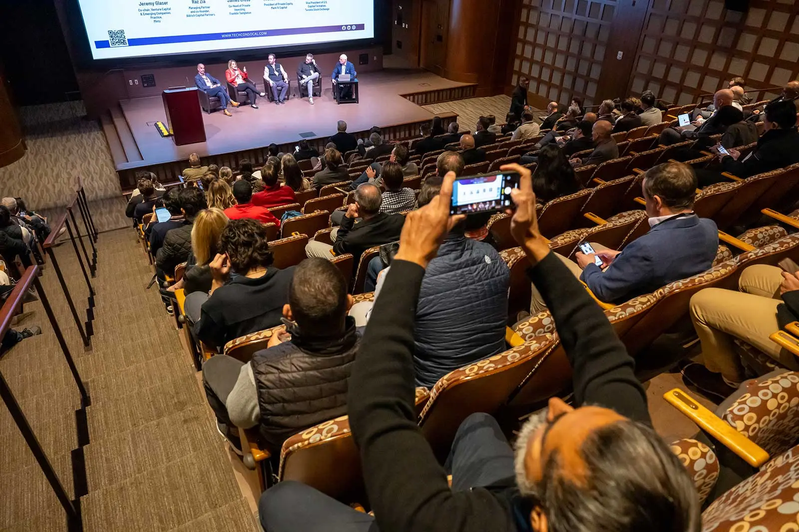

History TechCon began as a regional event with the vision of
empowering innovators and building inclusive opportunities in the
technology sector. Over the years, it has grown into a global
movement, regularly hosting conferences that unite entrepreneurs,
investors, and industry experts to exchange ideas and advance
technological progress. Today, TechCon is recognized as a premier
technology event with a legacy of shaping digital transformation
TechCon-History
Mission
TechCon's mission is to accelerate the digital transformation across
industries by providing a dynamic platform for learning,
collaboration, and innovation with emerging technologies. The
conference focuses on bringing together thought leaders,
professionals, and stakeholders to foster knowledge sharing, inspire
new ideas, and drive positive change in the tech ecosystem.

TechCon-Mission
Past Speakers
TechCon has featured a diverse lineup of speakers, including digital
transformation executives, policymakers, founders, and leading
innovators from various regions. Past keynotes have included industry
visionaries who share insights on leadership, growth, and the latest
advancements in emerging technologies. Each year, TechCon spotlights
bold thinkers and respected leaders who inspire attendees to drive
progress and innovation